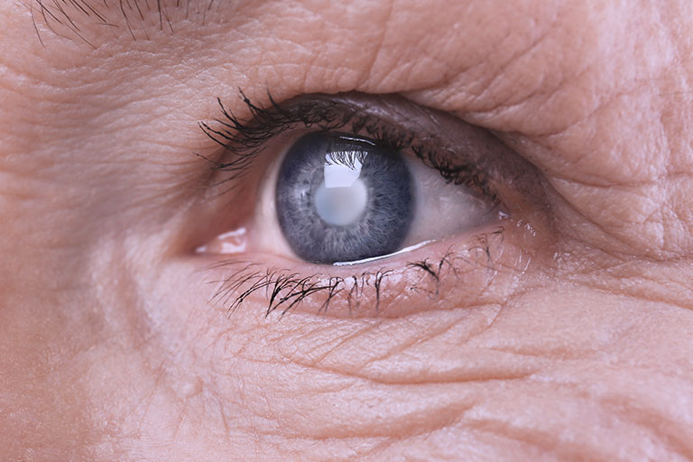
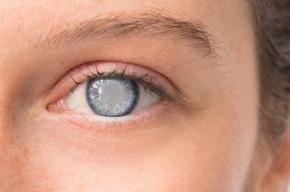

A catarata é uma doença que atinge apenas idosos.

MITO
A catarata pode afetar pessoas de todas as idades, incluindo recém-nascidos (catarata congênita) e jovens, embora seja mais comum em idosos devido ao envelhecimento natural do cristalino.